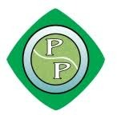

Welcome to the master data system deck. Scroll down to inspect our real-time department processes, ownership metrics, systems, and measurable targets.
Piramal Petroleum Pvt. Ltd. is committed to absolute efficiency across all operational stages. From high-integrity chemical lab quality assays to optimized supply chain channels and precision dispatch networks, our teams maintain 100% compliance through rigorous checklist-driven execution.
Active Operations
Process Controllers
Select any corporate process flow to inspect key operational metrics, system owners, and live resources.
Syncing with Master Data Sheet...
Every department runs on pre-defined checklists and database trackers. By standardizing training videos and flowcharts, we ensure zero operational lag and consistent scaling.